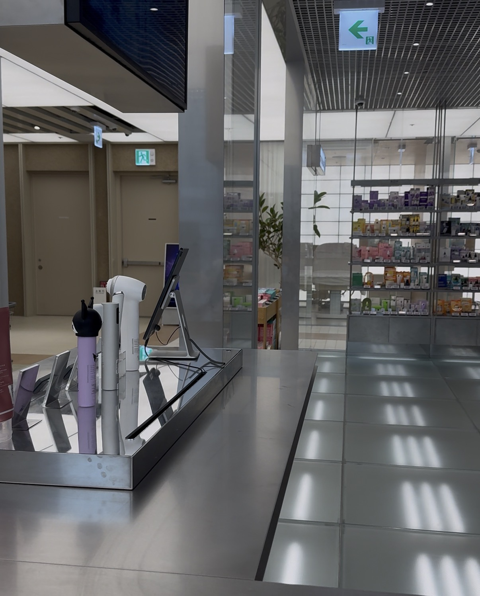

A student-led community created to make dermatology, medicine, skincare, science, and healthcare easier to explore.
Pre-Derm Society was created to give students a place to learn about dermatology and medicine in a simple, accessible, and student-friendly way.
We believe students should be able to explore healthcare and science before they ever step into a medical school classroom.
Through educational lessons, research resources, medical opportunities, and student projects, Pre-Derm Society encourages curiosity and evidence-based learning.
Our goal is simple: make learning about medicine feel exciting, approachable, and meaningful.

Every lesson completed helps grow our student-led educational community.
Students and community members reached through our educational work.
Educational lessons completed through Pre-Derm Society.
Student-friendly topics designed to make medicine easier to explore.
We want to inspire students to ask questions, explore science, understand healthcare, and discover where their curiosity can take them. Pre-Derm Society is a starting point — not an endpoint.